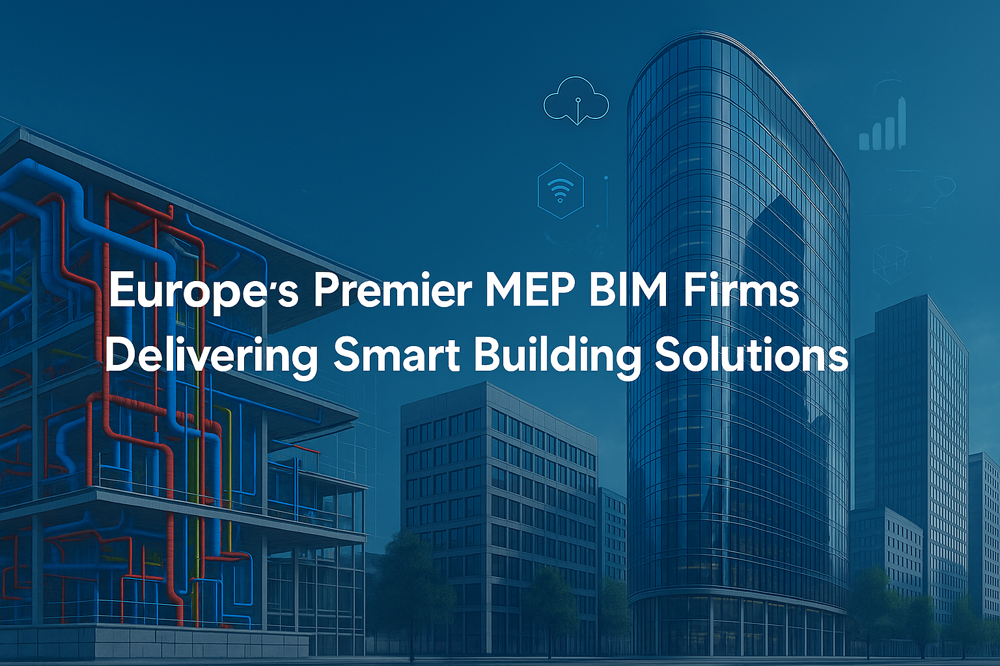

Europe’s Premier MEP BIM Firms Delivering Smart Building Solutions
Across Europe’s cities and campuses, the idea of “smart buildings” is no longer a futuristic vision—it’s rapidly becoming the reality that defines innovative urban living and working. From energy-efficient office towers to seamlessly connected research labs, these modern buildings depend on much more than impressive architecture. They rely on precise, collaborative, and forward-thinking digital design.
At the heart of this shift lies Building Information Modeling (BIM) for Mechanical, Electrical, and Plumbing (MEP) systems. Think of MEP BIM as the digital DNA of a building: it allows teams to coordinate electrical wiring, ventilation, safety alarms, and plumbing with a level of accuracy and insight previously impossible.
What Makes MEP BIM Vital for Smart European Buildings?
MEP BIM involves the creation of intelligent, 3D digital models that bring together all building systems—mechanical, electrical, and plumbing—into a single, coordinated design. By simulating the entire lifecycle of these networks, from construction to operation, MEP BIM gives architects, engineers, contractors, and facility managers a shared source of truth for every component of a project.
Why is this so important for smart buildings?
- Energy Efficiency: BIM enables simulation and analysis to optimize energy use, lowering costs and advancing Europe’s sustainability ambitions.
- Safety: Meticulous coordination means safer installation, operation, and maintenance with fewer unexpected errors.
- Operational Flexibility: Facilities can adapt to new uses and technologies with minimal disruption, making smart buildings genuinely “future-ready.”
Addressing Europe’s Unique Challenges
European construction faces distinct hurdles:
- Historic Preservation: Many projects retrofit or expand heritage buildings, requiring sensitive, precise digital modeling to respect original features.
- Space Constraints: Densely built cities mean efficient, clash-free layouts are a must—MEP BIM helps solve these puzzles in advance.
- Low-Carbon Targets: Regulations drive demand for low/net-zero carbon buildings—achievable only through integrated, holistic design.
- Smart Tech Integration: The push for IoT, automation, and advanced climate control requires every system to connect and “speak the same language.”
Enabling Complex, Multidisciplinary Collaboration
Real-time collaboration through cloud-based BIM platforms means mechanical engineers, electrical designers, architects, and contractors can work together across borders. BIM’s robust clash detection catches issues early. Lifecycle modeling helps clients operate their assets efficiently for decades.
Criteria for Choosing Europe’s Premier MEP BIM Partners
Selecting the right MEP BIM specialist for an innovative building project is crucial. Here’s what to look for:
- Experience with Complex European Projects: Proven delivery on large-scale or high-tech buildings in Europe demonstrates market knowledge and technical prowess.
- Mastery of Modern BIM Platforms: Proficiency with Revit, Navisworks, and cloud-based collaboration tools is non-negotiable for high-quality output.
- Commitment to Innovation: Because smart buildings are never “one-size-fits-all”, look for partners with a track record of sustainable, adaptive, and digitally integrated designs.
- Regulatory Know-How: Europe’s patchwork of local and EU regulations (from GDPR to energy codes to historic building requirements) demands a partner who navigates compliance skillfully.
- Smart Tech Ready: Firms should demonstrate success in integrating IoT devices, digital twins, and automated systems into their BIM workflows.
Top 5 MEP BIM Companies Delivering Smart Building Solutions
1. Arup
Engineering for a Smarter, Greener Europe
Arup is synonymous with technical brilliance and climate-responsive design. Renowned for serving as consultants on both landmark new builds and sensitive historic renovations, they’ve pioneered integrated MEP BIM delivery on everything from zero-carbon offices to world-class museums.
- Early BIM Adopters: Implemented digital coordination years before it became the industry standard.
- Holistic Collaboration: Their model unites engineers, architects, and user groups—no silos.
- Sustainability Champions: Energy modeling, low-impact materials, and systems built for European climate resilience are core to their process.
Website: https://www.arup.com/
2. AECOM
Interdisciplinary Excellence Across the Continent
AECOM blends global reach with deep local expertise—especially for public infrastructure, universities, healthcare complexes, and urban mixed-use developments.
- BIM-Led Project Management: Their digital twins offer real-time monitoring, predictive maintenance, and informed decision-making for clients.
- Urban Intelligence: GIS integration and city-scale modeling help optimize spaces and services for people, not just assets.
- Integrated Teams: Project delivery includes not just design and engineering, but also sustainability analysts and regulatory consultants for total workflow unity.
Website: https://aecom.com/
3. HDR Inc.
Adaptive, Data-Driven Solutions for Health, Research, and Beyond
HDR is celebrated for embedding innovative technologies into education, science, and healthcare environments across Europe.
- Blending Architecture & Engineering: HDR’s holistic design teams ensure building systems are elegant, efficient, and deeply connected to user needs.
- Operational Analytics: Their data-rich approach supports facility managers long after handover with insights for optimization and adaptation.
- Resilient Buildings: Design prioritizes disaster-readiness, adaptable space uses, and robust communications/safety systems.
Website: https://www.hdrinc.com/
4. Tesla Outsourcing Services
Flexible, Cost-Efficient BIM for Modern and Historic Projects
Tesla brings international BIM experience with a nimble, client-centered approach tailored for the diverse needs of Europe, from cutting-edge research labs in the Nordics to multi-phase hospitality upgrades in France.
- EU Standards Experts: Thorough knowledge of CEN/ISO BIM requirements and local building codes.
- Scalable Delivery: Able to handle both boutique innovative office retrofits and sprawling municipal programs.
- Detailed Documentation: High-quality as-builts and handover packages support smooth operations, renovations, or facilities management.
Website: https://www.teslaoutsourcingservices.com/
5. Jacobs Engineering Group
Integrated Digital Delivery for Europe’s Most Ambitious Smart Buildings
Jacobs is a powerhouse in engineering management, guiding complex projects from gigafactories and energy hubs to research campuses.
- Lifecycle BIM and Digital Twin Integration: Jacobs’ solutions enable asset managers to optimize operations, maintenance, and future upgrades.
- Value Engineering: Their approach blends sustainability, cost efficiency, and constructability, ensuring maximum return on investment.
- Constructability Analysis: BIM-led virtual rehearsals keep projects on time and budget.
Website: https://www.jacobs.com/
Innovations That Set These Firms Apart
Modular/Prefabricated MEP Systems:
Leverage off-site construction and modular components to reduce project timelines and costs while improving quality.
Digital Twin & IoT Integration:
MEP BIM platforms now create “digital twins”—live virtual models updated in real time—which connect with smart sensors and devices for operational insight and remote management.
Energy & Carbon Modeling:
Simulate building performance during design to hit energy benchmarks and deliver transparent reporting for sustainability certifications or compliance.
Cloud-Based, Dynamic Teamwork:
Geographically dispersed teams can co-author, update, and review models in real time, improving speed and reducing errors.
Practical Guidance for Clients & Stakeholders
Assessing Experience and Smart Systems Integration
- Review References: Ask for similar high-profile European project examples, mainly where intelligent automation or sustainability was a focus.
- Check Technology Stacks: Ensure firms possess experience with your preferred BIM platform and intelligent systems (e.g., digital twins, integrated BMS).
- Confirm End-to-End Capabilities: Ideally, your MEP BIM partner should support everything from early concept to post-construction facility management.
Evaluating Workflow Transparency and Quality
- Audit Documentation Practices: Quality BIM partners produce clear, complete plan sets, change logs, and as-builts.
- Require Workflow Visibility: Digital dashboards, open model access, and regular progress reports signal transparency.
- Post-Construction Support: Ask how they assist after handover—do they provide digital twins or training for facilities teams?
Future Trends: The Evolution of Smart Building MEP BIM in Europe
Net-Zero and Circular Design:
Smart building MEP BIM is now essential to achieving net-zero targets and supporting adaptive reuse, vital for Europe’s climate and resource goals.
Digital-First Operation:
Cloud-native BIM and digital twins will continue to transform how buildings are monitored, maintained, and upgraded.
Artificial Intelligence (AI) & Predictive Analytics:
AI-powered BIM analysis will allow teams to simulate everything from energy costs to emergency response, making buildings safer and more efficient.
Supply Chain and Modular Integration:
Tracking every system and component through BIM streamlines prefabrication, supply chain logistics, and on-site construction.
Conculsion
Europe’s smart building movement thrives on collaboration, digital innovation, and a shared vision for a sustainable future. Whether you’re modernizing a medieval university, building a zero-carbon research lab, or delivering smart offices, the choice of MEP BIM partner is pivotal. Leaders like Arup, AECOM, HDR Inc., Tesla Outsourcing Services, and Jacobs Engineering Group set the benchmark for insight, experience, and technological leadership.